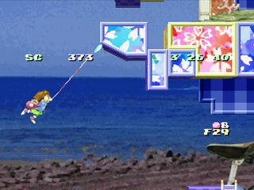
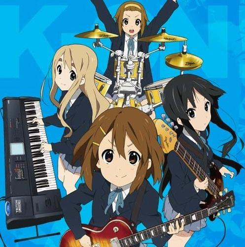

ひとりごと
ゲームやアニメのキャラクターの性別について(2013/12/13)
ゲームやその他のキャラクタを考える際に個人的に重要と思っているのが、メインキャラクターの性別です。 最近のゲーム・アニメ作品では、異常に女性キャラが多いですが、 それが本当に女性である必要性があるかというとそうでないものも多いと思います。
～海腹川背の主人公が女の子であるには理由がある～
海腹川背というアクションゲームがあります。
主人公の女の子(名前：海腹川背)を操作して、敵をやっけたりしながらゴールを目指すアクションゲームです。
海や魚をテーマにした独特の世界観と、ルアー付きの伸び縮みするロープを駆使するのが特徴です。
ロープの先はルアーになっていて、壁に食いついて振り子のようにして、ジャンプでは届かないさまざまな場所に行ったりできます。
敵にルアーをくっつけると、巻き取ることによって、敵をやっつける事もできます。
ちょうど魚釣りの釣り竿のようなイメージです。
ここでポイントなのは、このゲームのキャラクターは必然的に女の子である必要がある。ということです。
ゲームにおける「男」と「女」のイメージの違いは、男は暴力的で、女はそうではない、というのが一般的な見解でしょう。
このゲームでは、攻撃手段はルアーを使って敵を釣り上げるしかありません。
もし、主人公が「男の子」だったら、踏みつけや、パンチ、キック、で敵を倒せないことにプレイヤーは違和感を覚えるでしょう。
そういった意味で、海腹川背のゲームの主人公は、男の子ではなく、女の子でなければならない。ということになります。
しかし、主人公(海腹川背さん)の胸が大きいのは、これらの事とは全く関係なく明らかに開発者の趣味だと思われます(笑)。

↑海腹川背:PS版(可愛らしいキャラとは裏腹な正当なアクションゲーム
～「けいおん！」のメインキャラクターが全て女の子であることには理由がある～
「けいおん！」という、音楽バントをテーマにした、マンガ作品があります。
アニメ化され、知名度はそれなりにあると思います。

もともと大人向けの深夜アニメですが、高校での音楽活動の楽しさをテーマにしており、一般的な明る時間に放送しても全然問題のない作品だと思います。
主人公やメインキャラターは全員女の子です。
ここでポイントなのは、この作品は必然的に女の子がメインでなければならないということです。
前述同様に、男というのは暴力的なイメージがあります。
高校が舞台で、男の子が主人公の作品は、ほとんど必ずどこかで、「殴り合いのケンカ」が発生します。
同じく音楽バンドをテーマにした「ＢＥＣＫ！」では、主人公は不良に絡まれたり、不良の連中と関わりながら音楽活動していきます。
このように、女の子をメインキャラクターにすることによって、「喧嘩」「暴力」「不良」といった、悪イメージを与えることなく、「音楽そのものの楽しさ」をテーマに作品をつくることができます。
逆に男の子が主人公で、ケンカが発生しない作品があったら、何か物足りないことでしょう。
「ドラえもん」の主人公の「のびた」は頻繁に「ジャイアン」に殴られますが(昔の知識ではそうでしたが、今は違うのかな)、
「ちびまる子ちゃん」の主人公の「まる子」が口喧嘩はしますが、暴力的な喧嘩に巻き込まれる描写は見たことがないでしょう。
このように、ゲームやアニメでは「作品のイメージ」が大切で、メインキャラクターの性別が作品の世界観に重要な意味を持つと私は思います。
～最近のアニメ作品では、商業的な理由で女の子が多いのは、世界観的に良くないと思う～
近年の流行でしょうか。不況による商業的な理由でしょうか。
最近は作品のキャラクターの性別に意味を持たなくなってきている気がします。
前述のように、「女の子が主人公」と言うのは、
本来は暴力と無縁の「平和の象徴」であると私は考えております。
暴力的な争い、生や死と無縁の世界。
鑑賞したり、プレイする側としては、気軽に安心して楽しめる。
なので、正直言いますと、
「本来は男の子がメインキャラであるはずの作品で、女の子をメインキャラにすれば売れる。」
という世の中の流れが私としてはあまり好きになれません。
「よくわかる現代魔法」という魔法少女バトルもの が好きな自分が何いってんだと、自分で突っ込みたくなりますが・・・
最近では「○○○＆ドラゴンズ」、「○○○モンスターズ」というゲームがありまして、よく使うキャラは、ドラゴンでも、怪物でもなく、「女の子」だったりします。(性能的に優れているのでドラゴンを使わないことも…)
～ゲームのキャラの性別は男・女、どちらが望ましいか？～
任天堂にもお姫様が戦うゲームはファミコン時代のスーパーマリオＵＳＡの頃から存在しますし、ＤＳにはピーチ姫様が主人公のアクションゲームがあったりします。
以前、私がメイドイン俺でテニスゲームを投稿しました。
ゲームの主人を女の子にしたのは下記の理由によるものです。
・男性から見て、主人公は可愛い方がいい！
・女性から見て、主人公はプレイヤー本人と同じ性別のほうが、好感が持て、安心してプレイできる？
・作り手から見て、長い髪の毛や、ひらひらしたスカートなど、動くものが多い女の子のほうが、アニメーションさせた時に躍動感が出る！
よって、前述の件も含めて結論的に、「世界観を損なわなければ、主人公は女の子にするべき」。
と私は思います。

独特のアクションと奥深いゲーム性、 個性的な世界観やキャラクター、心地良いBGMなど今尚多くのファンを魅了している名作アクションゲーム
ニンテンドー３ＤＳソフト：定価4,800円
Amazon新品:1,340円より

メンバーは全員かわいい女の子！でもほぼ全員ボケ担当！全くの楽器初心者の唯が入部して、なんとか出発できた軽音楽部。とりあえず海合宿してみたり、あわてて顧問を探したり…。ゆるやか部活４コマいざ演奏開始です！
Amazon[Kindle版]:800円

『スーパーマリオブラザーズ』とは逆に、クッパにさらわれたマリオ・ルイージ・キノピオを
ピーチが救うため冒険する
ニンテンドーＤＳソフト：定価4,800円
Amazon中古:1,120円より